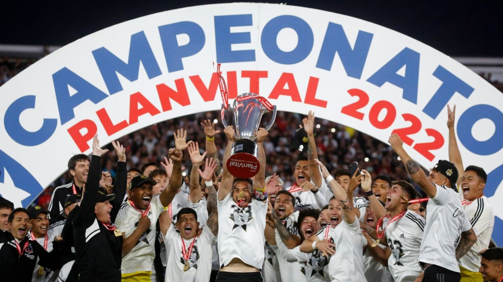

COLO-COLO CAMEPON
El cuadro albo alza su corona 33
Colo Colo.
no tuvo rivales en la obtención de su corona número 33 en el fútbol chileno.
Porque la extraordinaria campaña que han realizado sus inmediatos perseguidores, Curicó y Ñublense,
está lejos de amagar la vuelta olímpica del Cacique. Campeón sin apelación por todos los factores
del juego. El equipo que más partidos ganó, el que menos perdió, el más goleador, el menos batido y,
lo más relevante, el que mejor jugó en la carrera larga que significa toda una temporada.
Al final de la primera rueda los albos terminaron en la punta igualados con Unión Española y Ñublense.
En la segunda rueda ha ganado nueve partidos, empató tres y perdió uno. Simplemente demoledor.
El proceso es un término extremadamente manoseado, pero encaja perfecto en la ruta de
Gustavo Quinteros en la banca de Colo Colo.
En el 2020 asumió para salvar al equipo del descenso y
lo consiguió en la angustiosa liguilla de promoción, con partido de desempate ante la Universidad de
Concepción. A partir de ahí decidieron una poda que nunca es fácil, pues se fueron varios jugadores
estelares: Esteban Paredes, Jorge Valdivia, Matías Fernández, Carlos Carmona, Jaime Valdés,
Julio Barroso. Varios de ellos, importantes en la historia del cuadro blanco. Quinteros quería
otra cosa, tenía un plan diferente y el equipo varió. Peleó un título que parecía asegurado y
que se le fue por errores propios, el Covid y una arremetida imparable de la Universidad Católica.
Fuente: AS.COM.CL